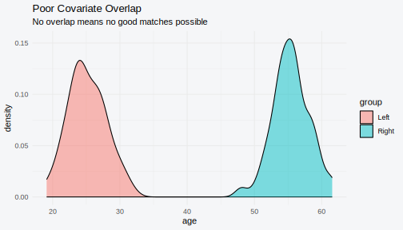

Troubleshooting Guide
Gilles Colling
2026-01-07
Source:vignettes/troubleshooting.Rmd
troubleshooting.RmdOverview
This vignette provides solutions to common issues encountered when using couplr. Each section describes a problem, explains why it occurs, and provides step-by-step solutions.
Quick reference:
| Issue | Jump to Section |
|---|---|
| No valid pairs found | Infeasible Problems |
| Poor balance after matching | Poor Balance |
| Matching is too slow | Performance Issues |
| Memory errors | Memory Errors |
| Different results with different methods | Non-Determinism |
| Unexpected NA in results | Missing Values |
| C++ compilation errors | Installation Issues |
Infeasible Problems
Symptom
# This fails: all assignments have Inf cost
cost <- matrix(c(1, Inf, Inf, Inf, Inf, Inf, Inf, 2, 3), nrow = 3, byrow = TRUE)
result <- lap_solve(cost)
#> Error: Infeasible given forbidden edgesError message: “No feasible assignment found” or total cost is Inf.
Cause
A feasible assignment requires that every row can be assigned to at least one column with finite cost. When rows have all-Inf or all-NA entries, no valid assignment exists.
Diagnosis
# Check for infeasible rows
check_feasibility <- function(cost_matrix) {
finite_per_row <- rowSums(is.finite(cost_matrix))
infeasible_rows <- which(finite_per_row == 0)
if (length(infeasible_rows) > 0) {
cat("Infeasible rows (no finite costs):", infeasible_rows, "\n")
return(FALSE)
}
finite_per_col <- colSums(is.finite(cost_matrix))
infeasible_cols <- which(finite_per_col == 0)
if (length(infeasible_cols) > 0) {
cat("Infeasible columns (no finite costs):", infeasible_cols, "\n")
return(FALSE)
}
cat("Problem appears feasible\n")
return(TRUE)
}
# Check the problematic matrix
cost <- matrix(c(1, Inf, Inf, Inf, Inf, Inf, Inf, 2, 3), nrow = 3, byrow = TRUE)
check_feasibility(cost)
#> Infeasible rows (no finite costs): 2
#> [1] FALSESolutions
1. Remove infeasible rows/columns:
# Remove rows with no valid assignments
cost <- matrix(c(1, Inf, Inf, Inf, Inf, Inf, Inf, 2, 3), nrow = 3, byrow = TRUE)
valid_rows <- rowSums(is.finite(cost)) > 0
cost_valid <- cost[valid_rows, , drop = FALSE]
if (nrow(cost_valid) > 0) {
result <- lap_solve(cost_valid)
cat("Matched", nrow(result), "of", nrow(cost), "rows\n")
}
#> Matched 2 of 3 rows2. Add fallback costs:
# Replace Inf with high (but finite) penalty
cost_with_fallback <- cost
cost_with_fallback[!is.finite(cost_with_fallback)] <- 1e6 # Large penalty
result <- lap_solve(cost_with_fallback)
print(result)
#> Assignment Result
#> =================
#>
#> # A tibble: 3 × 3
#> source target cost
#> <int> <int> <dbl>
#> 1 1 1 1
#> 2 2 3 1000000
#> 3 3 2 2
#>
#> Total cost: 1000003
#> Method: bruteforce3. For matching: check covariate overlap:
# Simulate poor overlap scenario
set.seed(123)
left <- tibble(id = 1:50, age = rnorm(50, mean = 25, sd = 3))
right <- tibble(id = 1:50, age = rnorm(50, mean = 55, sd = 3))
# Visualize overlap
library(ggplot2)
combined <- bind_rows(
left %>% mutate(group = "Left"),
right %>% mutate(group = "Right")
)
ggplot(combined, aes(x = age, fill = group)) +
geom_density(alpha = 0.5) +
labs(title = "Poor Covariate Overlap",
subtitle = "No overlap means no good matches possible") +
theme_minimal() +
theme(plot.background = element_rect(fill = "transparent", color = NA),
panel.background = element_rect(fill = "transparent", color = NA))
Poor Balance Despite Matching
Symptom
After matching, balance_diagnostics() shows |std_diff|
> 0.25 for some variables.
# Example of poor balance
set.seed(456)
left <- tibble(
id = 1:100,
age = rnorm(100, 30, 5),
income = rnorm(100, 80000, 20000) # Very different from right
)
right <- tibble(
id = 1:100,
age = rnorm(100, 32, 5),
income = rnorm(100, 40000, 10000) # Very different income
)
result <- match_couples(left, right, vars = c("age", "income"), auto_scale = TRUE)
#> Auto-selected scaling method: standardize
balance <- balance_diagnostics(result, left, right, vars = c("age", "income"))
print(balance)
#>
#> Balance Diagnostics for Matched Pairs
#> ======================================
#>
#> Matching Summary:
#> Method: lap
#> Matched pairs: 100
#> Unmatched left: 0 (of 100)
#> Unmatched right: 0 (of 100)
#>
#> Variable-level Balance:
#> # A tibble: 2 × 7
#> Variable `Mean Left` `Mean Right` `Mean Diff` `Std Diff` `Var Ratio` `KS Stat`
#> <chr> <dbl> <dbl> <dbl> <dbl> <dbl> <dbl>
#> 1 age 30.6 32.5 -1.89 -0.386 1.05 0.22
#> 2 income 77666. 41353. 36313. 2.40 2.15 0.81
#>
#> Overall Balance:
#> Mean |Std Diff|: 1.391 (Poor)
#> Max |Std Diff|: 2.397
#> Vars with |Std Diff| > 0.25: 100.0%
#>
#> Balance Interpretation:
#> |Std Diff| < 0.10: Excellent balance
#> |Std Diff| 0.10-0.25: Good balance
#> |Std Diff| 0.25-0.50: Acceptable balance
#> |Std Diff| > 0.50: Poor balanceCauses
- Weak overlap: Groups are too different on key variables
- Missing confounders: Important variables not included in matching
- Caliper too loose: Accepting poor matches
- Wrong scaling: Variables not properly weighted
Solutions
1. Add more matching variables:
# Include additional relevant variables
result <- match_couples(
left, right,
vars = c("age", "income", "education", "region"), # More variables
auto_scale = TRUE
)2. Tighten caliper (fewer but better matches):
result_strict <- match_couples(
left, right,
vars = c("age", "income"),
max_distance = 0.3, # Stricter caliper
auto_scale = TRUE
)
#> Auto-selected scaling method: standardize
#> Error: Auction(scaled): iteration guard at eps=7885383213142811492880940678185446561903245540964986346309735611880493954648021596949837549977694598396708273161382015616428292389740290815495083885169868915380815811828883936262015287544410809252305189353561236385323861047382998003414092120491154540881183908342668085623145397342096496525312.000000, phase=19
cat("Original matches:", result$info$n_matched, "\n")
#> Original matches: 100
cat("With caliper:", result_strict$info$n_matched, "\n")
#> Error: object 'result_strict' not found
balance_strict <- balance_diagnostics(result_strict, left, right, vars = c("age", "income"))
#> Error: object 'result_strict' not found
print(balance_strict)
#> Error: object 'balance_strict' not found3. Use blocking on problematic variable:
# Block on income tertiles to ensure exact balance
left$income_cat <- cut(left$income, breaks = 3, labels = c("low", "mid", "high"))
right$income_cat <- cut(right$income, breaks = 3, labels = c("low", "mid", "high"))
blocks <- matchmaker(left, right, block_type = "group", block_by = "income_cat")
result_blocked <- match_couples(
blocks$left, blocks$right,
vars = c("age"), # Match on age within income blocks
block_id = "block_id"
)4. Try different scaling:
# Compare scaling methods
for (scale_method in c("robust", "standardize", "range")) {
res <- match_couples(left, right, vars = c("age", "income"),
auto_scale = TRUE, scale = scale_method)
bal <- balance_diagnostics(res, left, right, vars = c("age", "income"))
cat(scale_method, "- max |std_diff|:",
round(bal$overall$max_abs_std_diff, 3), "\n")
}
#> robust - max |std_diff|: 2.397
#> standardize - max |std_diff|: 2.397
#> range - max |std_diff|: 2.397Performance Issues
Symptom
match_couples() or lap_solve() takes too
long or doesn’t complete.
Diagnosis
# Estimate runtime
estimate_runtime <- function(n, seconds_per_billion = 1) {
ops <- n^3
time_sec <- ops / 1e9 * seconds_per_billion
if (time_sec < 60) {
sprintf("%.1f seconds", time_sec)
} else if (time_sec < 3600) {
sprintf("%.1f minutes", time_sec / 60)
} else {
sprintf("%.1f hours", time_sec / 3600)
}
}
cat("Estimated runtime for optimal matching:\n")
#> Estimated runtime for optimal matching:
for (n in c(100, 500, 1000, 3000, 5000, 10000)) {
cat(sprintf(" n = %5d: %s\n", n, estimate_runtime(n)))
}
#> n = 100: 0.0 seconds
#> n = 500: 0.1 seconds
#> n = 1000: 1.0 seconds
#> n = 3000: 27.0 seconds
#> n = 5000: 2.1 minutes
#> n = 10000: 16.7 minutesSolutions
1. Use greedy matching for large problems:
set.seed(789)
n <- 500
large_left <- tibble(id = 1:n, x1 = rnorm(n), x2 = rnorm(n))
large_right <- tibble(id = 1:n, x1 = rnorm(n), x2 = rnorm(n))
# Greedy is much faster
time_greedy <- system.time({
result_greedy <- greedy_couples(
large_left, large_right,
vars = c("x1", "x2"),
strategy = "row_best"
)
})
cat("Greedy matching (n=500):", round(time_greedy["elapsed"], 2), "seconds\n")
#> Greedy matching (n=500): 0.24 seconds
cat("Quality (mean distance):", round(mean(result_greedy$pairs$distance), 4), "\n")
#> Quality (mean distance): 0.28862. Use blocking to divide the problem:
# Create clusters to match within
blocks <- matchmaker(
large_left, large_right,
block_type = "cluster",
block_vars = c("x1", "x2"),
n_blocks = 10 # 10 blocks of ~200 each
)
# Match within blocks (10 x O(200^3) << O(2000^3))
result_blocked <- match_couples(
blocks$left, blocks$right,
vars = c("x1", "x2"),
block_id = "block_id"
)3. Choose a faster algorithm:
# For n > 1000, auction algorithm often faster
result <- match_couples(
large_left, large_right,
vars = c("x1", "x2"),
method = "auction"
)
# For sparse problems (many forbidden pairs)
result <- match_couples(
left, right,
vars = vars,
max_distance = 0.5, # Creates sparsity
method = "sap" # Sparse algorithm
)4. Pre-compute and cache distances:
# Compute once, reuse multiple times
dist_cache <- compute_distances(
large_left, large_right,
vars = c("x1", "x2"),
scale = "robust"
)
# Fast: reuse cached distances
result1 <- match_couples(dist_cache, max_distance = 0.3)
#> Error: Auction(scaled): iteration guard at eps=7885383213142811492880940678185446561903245540964986346309735611880493954648021596949837549977694598396708273161382015616428292389740290815495083885169868915380815811828883936262015287544410809252305189353561236385323861047382998003414092120491154540881183908342668085623145397342096496525312.000000, phase=19
result2 <- match_couples(dist_cache, max_distance = 0.5)
#> Error: Auction(scaled): iteration guard at eps=7885383213142811492880940678185446561903245540964986346309735611880493954648021596949837549977694598396708273161382015616428292389740290815495083885169868915380815811828883936262015287544410809252305189353561236385323861047382998003414092120491154540881183908342668085623145397342096496525312.000000, phase=19
result3 <- match_couples(dist_cache, max_distance = 1.0)
#> Error: Auction(scaled): iteration guard at eps=1126483316163258824265631974034443891639823813610806420694737497815224935438897973018092081948265388931426075427056248934211070659219110229909045880244837695627342250315221262058036152573541196844030732698832451884756126289658649148196507095803136496140945309873526895910049842722193738301440.000000, phase=20Memory Errors
Cause
A full distance matrix for n×n requires 8n² bytes:
# Memory requirements
memory_needed <- function(n) {
bytes <- 8 * n^2
if (bytes < 1e6) {
sprintf("%.1f KB", bytes / 1e3)
} else if (bytes < 1e9) {
sprintf("%.1f MB", bytes / 1e6)
} else {
sprintf("%.1f GB", bytes / 1e9)
}
}
cat("Memory for full distance matrix:\n")
#> Memory for full distance matrix:
for (n in c(1000, 5000, 10000, 20000, 50000)) {
cat(sprintf(" n = %5d: %s\n", n, memory_needed(n)))
}
#> n = 1000: 8.0 MB
#> n = 5000: 200.0 MB
#> n = 10000: 800.0 MB
#> n = 20000: 3.2 GB
#> n = 50000: 20.0 GBSolutions
1. Use greedy matching (avoids full matrix):
# Greedy computes distances on-the-fly
result <- greedy_couples(
left, right,
vars = covariates,
strategy = "row_best" # Most memory-efficient
)2. Use blocking to create smaller subproblems:
# Each block is much smaller
blocks <- matchmaker(left, right, block_type = "cluster", n_blocks = 20)
result <- match_couples(blocks$left, blocks$right, vars = vars, block_id = "block_id")3. Use caliper to create sparse matrix:
# Caliper excludes distant pairs (sparse representation)
result <- match_couples(
left, right,
vars = covariates,
max_distance = 0.5,
method = "sap" # Sparse-optimized algorithm
)4. Increase R’s memory limit (Windows):
# Increase to 16 GB (if available)
memory.limit(size = 16000)Different Results with Different Methods
Symptom
Different algorithms return different assignments:
cost <- matrix(c(1, 2, 2, 2, 1, 2, 2, 2, 1), nrow = 3, byrow = TRUE)
result_jv <- lap_solve(cost, method = "jv")
result_hungarian <- lap_solve(cost, method = "hungarian")
cat("JV assignment: ", result_jv$target, "\n")
#> JV assignment: 1 2 3
cat("Hungarian assignment:", result_hungarian$target, "\n")
#> Hungarian assignment: 1 2 3
cat("JV total cost: ", get_total_cost(result_jv), "\n")
#> JV total cost: 3
cat("Hungarian total cost:", get_total_cost(result_hungarian), "\n")
#> Hungarian total cost: 3Cause
When multiple optimal solutions exist (tied costs), different algorithms may find different ones. The total cost should be the same—if not, report a bug.
Diagnosis
# Check for ties
check_ties <- function(cost_matrix) {
n <- nrow(cost_matrix)
# Check if diagonal dominates (trivial ties)
diag_costs <- diag(cost_matrix)
if (length(unique(diag_costs)) < n) {
cat("Tied costs on diagonal - multiple optima likely\n")
}
# Check cost uniqueness
unique_costs <- length(unique(as.vector(cost_matrix)))
total_entries <- length(cost_matrix)
if (unique_costs < total_entries * 0.5) {
cat("Many repeated costs - ties possible\n")
}
}
check_ties(cost)
#> Tied costs on diagonal - multiple optima likely
#> Many repeated costs - ties possibleSolutions
1. Verify total costs match:
# Total cost should be identical
stopifnot(get_total_cost(result_jv) == get_total_cost(result_hungarian))
cat("Both methods found optimal solutions (same total cost)\n")
#> Both methods found optimal solutions (same total cost)2. Use Hungarian for deterministic tie-breaking:
# Hungarian has consistent tie-breaking
result <- lap_solve(cost, method = "hungarian")3. Add small noise to break ties:
set.seed(42)
cost_perturbed <- cost + matrix(rnorm(9, 0, 1e-10), 3, 3)
result <- lap_solve(cost_perturbed)Missing Values in Data
Symptom
Matching fails or produces unexpected results due to NA values.
left <- tibble(id = 1:5, age = c(25, 30, NA, 35, 40))
right <- tibble(id = 1:5, age = c(28, 32, 33, 36, 42))
# This may fail or give unexpected results
result <- match_couples(left, right, vars = "age")
#> Error: Missing values (NA) not allowed in matching variablesCause
couplr requires complete cases for distance computation. NA values in matching variables cause issues.
Solutions
1. Remove rows with NA (before matching):
left_clean <- left %>% filter(!is.na(age))
right_clean <- right %>% filter(!is.na(age))
result <- match_couples(left_clean, right_clean, vars = "age")
cat("Matched", result$info$n_matched, "pairs (excluded 1 left unit with NA)\n")
#> Matched 4 pairs (excluded 1 left unit with NA)2. Impute missing values:
# Simple mean imputation
left_imputed <- left %>%
mutate(age = if_else(is.na(age), mean(age, na.rm = TRUE), age))
result <- match_couples(left_imputed, right, vars = "age")
cat("Matched", result$info$n_matched, "pairs (imputed 1 NA with mean)\n")
#> Matched 5 pairs (imputed 1 NA with mean)3. Use preprocessing to diagnose:
health <- preprocess_matching_vars(
left, right,
vars = "age"
)
print(health)
#> Preprocessing Result
#> ====================
#>
#> Variables: 1
#> Scaling method: noneInstallation Issues
C++ Compilation Errors
Symptom
Error in .Call("_couplr_assignment_impl"): object not foundor
Error: package 'couplr' was built under R version X.XSolutions
1. Clean and reinstall:
# In R:
remove.packages("couplr")
install.packages("couplr")
# Or from GitHub:
devtools::install_github("gcol33/couplr", force = TRUE)2. Clean compiled files (development):
Then rebuild:
3. Check Rtools/compiler (Windows):
# Check if Rtools is properly configured
Sys.which("make")
#> make
#> "C:\\rtools45\\usr\\bin\\make.exe"
Sys.which("g++")
#> g++
#> "C:\\rtools45\\X86_64~1.POS\\bin\\G__~1.EXE"Make sure Rtools is installed and PATH is configured correctly.
Common Error Messages
“method_used attribute is NULL”
Cause: Result object wasn’t created properly.
Solution: Use lap_solve() instead of
assignment() for the tidy interface.
“Cost matrix contains non-finite values”
Cause: NA or NaN values in cost matrix (not Inf).
Solution: Replace NA with Inf for forbidden assignments, or remove rows/cols.
Getting Help
If you encounter an issue not covered here:
-
Check function documentation:
?match_couples,?lap_solve - Search GitHub issues: github.com/gcol33/couplr/issues
- Create a minimal reproducible example:
# Minimal example template
library(couplr)
# Minimal data that reproduces the issue
set.seed(123)
left <- tibble(id = 1:10, x = rnorm(10))
right <- tibble(id = 1:10, x = rnorm(10))
# Code that causes the error
result <- match_couples(left, right, vars = "x")
# Expected vs actual behavior
# Expected: ...
# Actual: [error message]
# Session info
sessionInfo()- Open an issue with your example at github.com/gcol33/couplr/issues/new
See Also
-
vignette("getting-started")- Basic usage -
vignette("matching-workflows")- Production matching pipelines -
vignette("algorithms")- Algorithm selection guide -
vignette("comparison")- Comparison with other packages